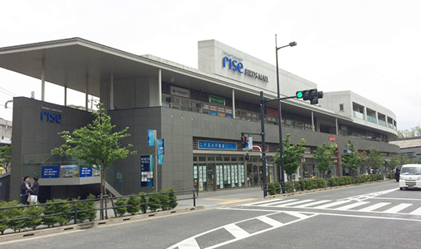
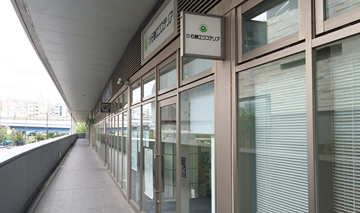

会社概要
Company Information
会社概要
-

本社
-

業務センター（横浜）
| 設立 | |
|---|---|
| 代表者 | 代表取締役社長 細井俊宏 |
| 本社 | 〒158-0094 東京都世田谷区玉川2-2-1 |
| 業務センター | 〒225-0003 神奈川県横浜市青葉区新石川3-34-1 |
| 資本金 | 100,000,000円 |
| 建設業登録 | 国土大臣許可（特-28）第6657号 |
| 許可業種 | 造園工事業、土木工事業、とび・土工工事業、石工事業、鋼構造物工事業、ほ装工事業 しゅんせつ工事業、塗装工事業、水道施設工事業 |
| 従業員数 | 193名（） |
| 技術者 |
技術士：4名
樹木医：5名 1級造園施工管理技士：76名 2級造園施工管理技士：26名 1級土木施工管理技士：46名 2級土木施工管理技士：18名 |
| 関連会社 | 株式会社 石勝グリーンメンテナンス |